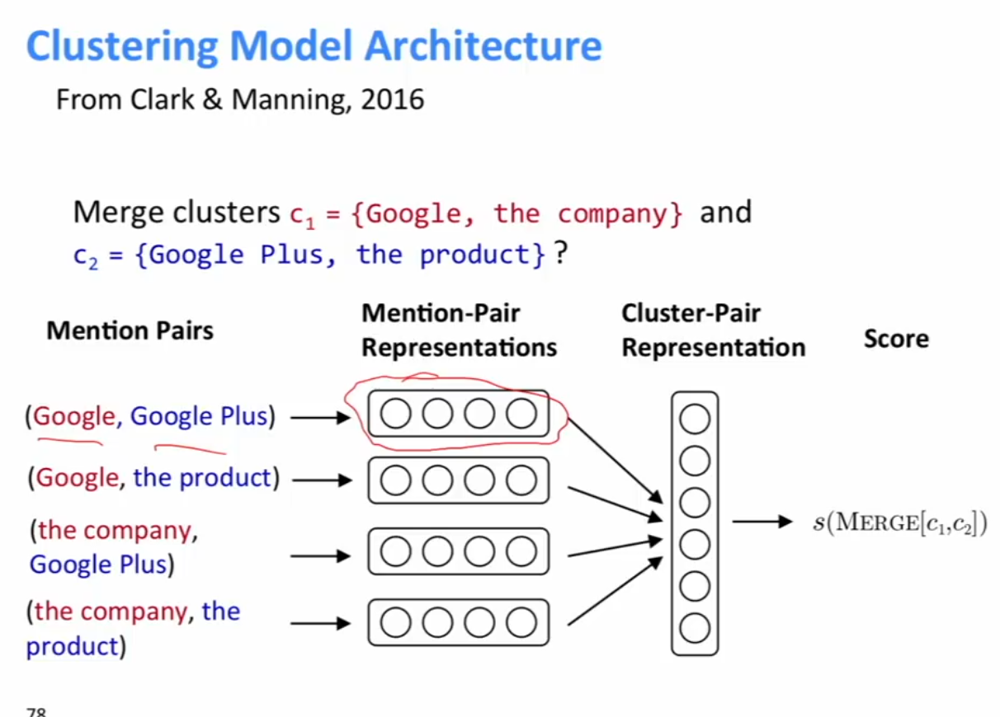
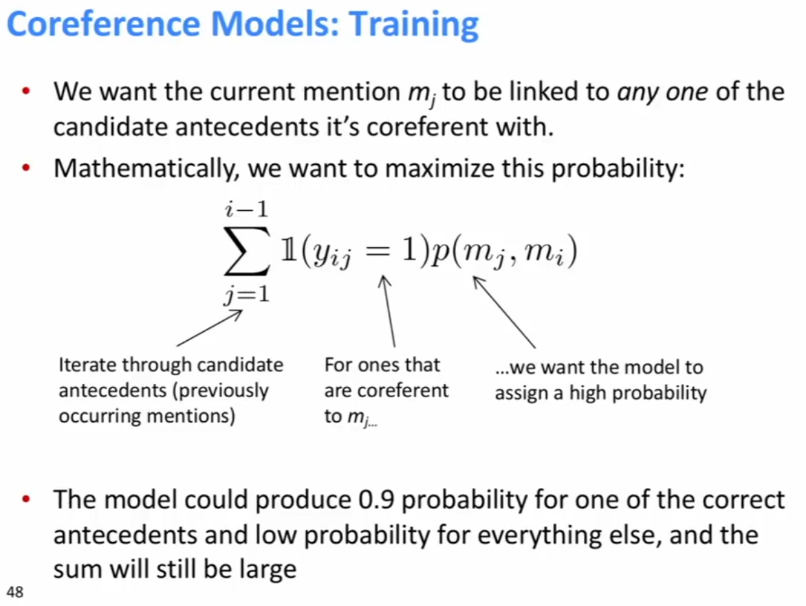
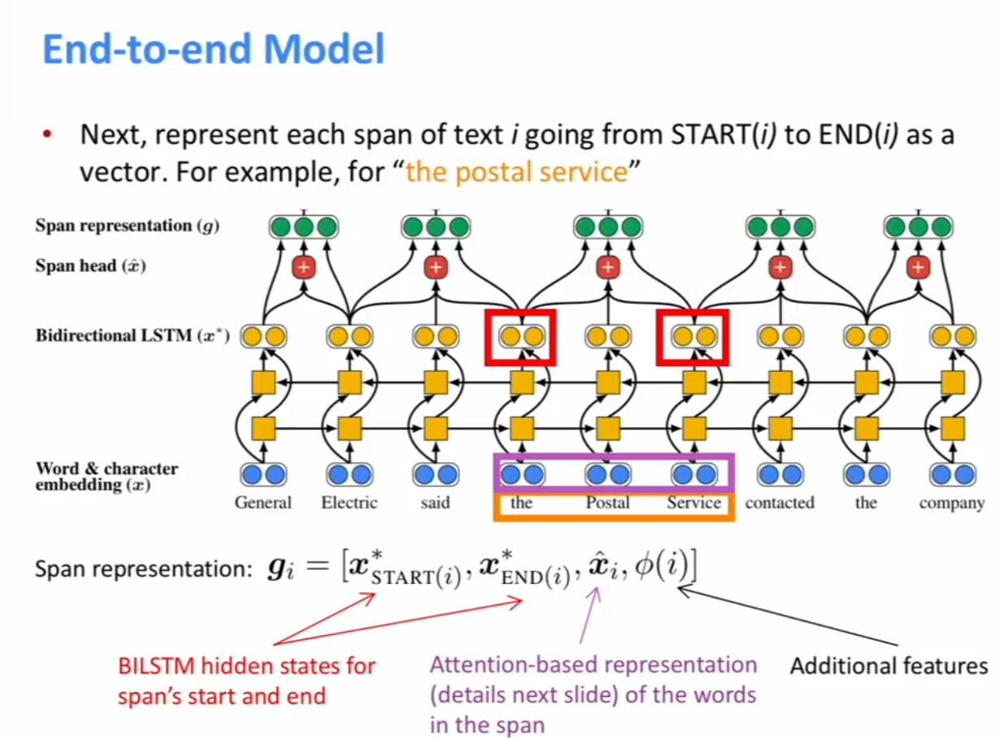
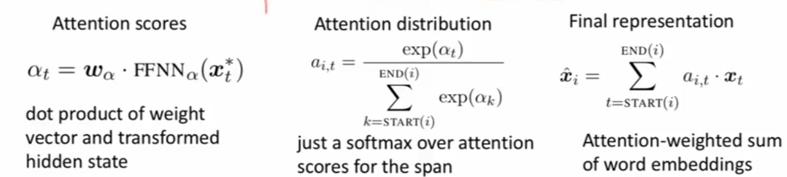
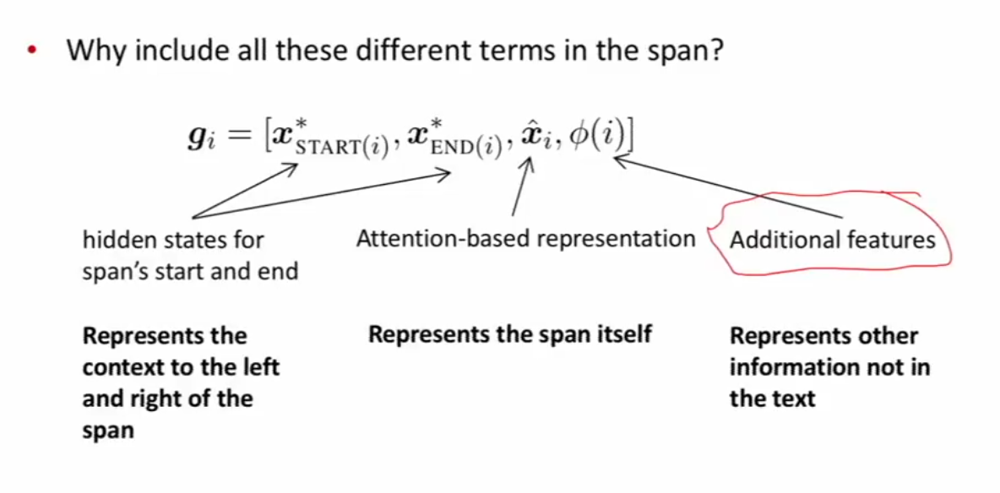
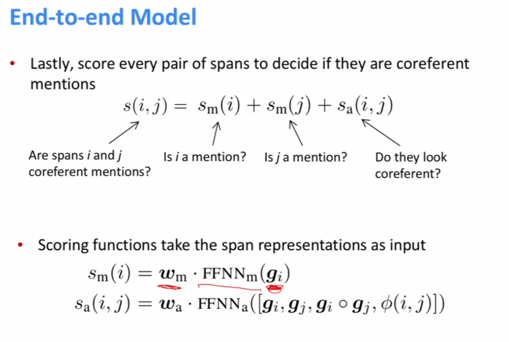
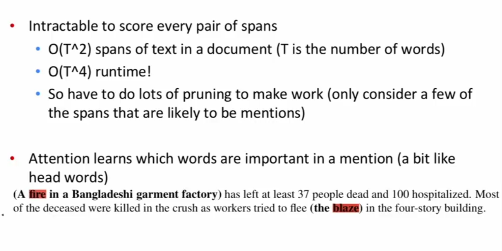

Coreference resolution: Identify all
mentions that refer to the same real world entity. (1)
Uses of coreference resolution:
- Full text understanding, information extraction, question answering, summarisation, disambiguating translations, dealing with reference in dialogue systems
Coreference Resolution
1. Detect the mentions (easy)
2. Cluter the mensions (hard)
Mention Detection:
Mention: all spans of text referring to some entity
Three kinds of mentions:
- Pronouns: I, your, it, she, him, etc
- Use a part of speech tagger to find
- Named Entities: Peopple, places, etc
- Use a NER system like hw3.
- Noun phrases: “a dog”, “the big fluffy cat stuck in the tree”
- Use a parser (especially a constituency parser)
However, marking all pronouns, named entities, NPs as mentions over genertes mentions
- It is sunny, Every student, No student, I’m searching everywhere to find the best donut in the world, 100 miles <- the before do not have reference because either does not exist or does not reference a concrete object/person.
To deal with this: Train a classifier to filter our spurious mentions. But most practitioners don’t do this
Much more common: Keep all mentions as “candidate mentions”
- After your coreference system is done running discard all singleton mentions (objects that have not been marked as a coreference with anythign else)
Pre 2015 systems for corefernece resolution was a POS tagger, NER tagger, and parser pipeline.
Coreference Models
Classical Rule-based Models (pronominal anaphora resolution)
- Hobbes Naive Algorithm for finding the reference of pronouns
- Winograd Schema: “The city coucil refused the women a permit because they feared violence; the city council refused teh women a permit becaus they advocated violence”.
- You need world knowledge to solve them, it might be AI-strong. Coreference is still not a solved problem!
Mention Pair Models
- Loop through the text, and every time you hit a mention, use a trained binary classifier co compute the probability it is/isn’t a coference with every previous mention.
Test-time: Whe model outputs coreference probability above some confidence (0.5) add coreference links. Also add links between all pairs linked to by the same words to get clusters.
Example: I voted for Nader because he was most aligned with my values, she said.
- Upgrade: Above doesn’t really work well. Instead of doing corefernece classification over all pairs of candidates, only run the algorithm over textual dependents. Ie he and Nader, my and I. Don’t need to check my and Nader.
If we have a long document with lots of mentions, we dont want to look at all pairs. This appraoch is much more lingusitically plausible.
Mention Ranking
Assign each mention its highest scoring candidate antecedent according to the model, with a dummy NA mention to wllow the model to decline linking the current mtntion to anything. Loss function as in Appendix (2). Trained to just find any one (or 0) antecedents for each mention, and all the ones pointing to the same mention are subsequently clustered together.
Clustering
Agglomerative clustering algorithm: Merge a pair of clusters at each step, model scores which cluster merges are good.

Current State of The Art
Kenton Lee et al, UW, EMLP2017. Details in Appendix 3.
Mention Ranking model
Improvements over simple feed-forward NN
- Use an LSTM
- Use Attention
- Do mention detection and coreference end-to-end
- No mention detection step
- Instead consider every span of text (up to a certain length) as a candidate mention. A span is just a contiguous sequence of words
Evaluation of Coreference Evaluation
MUC, CEAF, LEA, B-CUBED, BLANC
Often report the average over a few different metrics.
Undercluster - automatically get great precision, terrible recall (because everything is in its own cluster). Overcluster, you get great recall (everything is in one cluser), but terrible precision (thigns that are not supposed to be clustered together are)
OntoNotes dataset can be used for evaluation.
Appendices:
Appendix 1:
Lingusitics Background of Coreference
Coreference: when two mentions refer to the same entitiy in the world: Barack Obama … Obama.
A related lingustic concept is anaphora: when a term (anaphor) refers to another term (antecedent): Barack Obama (antecedent) said he (anaphor) would sign the bill.
Not all anaphoric textual relationships have reference:
Every dancer twister her knee; No dancer twister her knee.
her is anaphoric to every dancer/no dancer, but there is no corefernece.
Not all anaphoric relations are coreferential: We went to see a concert last night. The tickets were really expensive.
The tickets are deemed to be anaphoric to concert (called bridging anaphora), but not coreference.
Usually the antecedent comes before the anaphor (eg a pronoun, but nor always).
Appendix 2:
Loss function for Mention Ranking Models:

Appendix 3:
Current SOTA 2017 for coreference resolution



Their heuristic pruning algo is a mention detector.